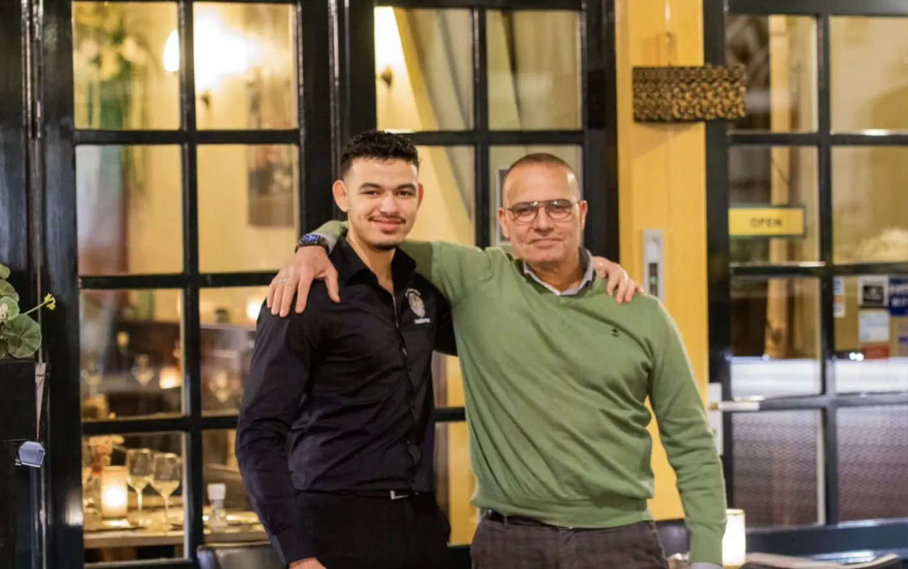
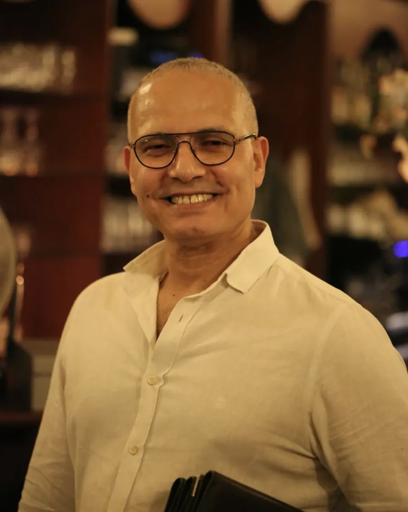
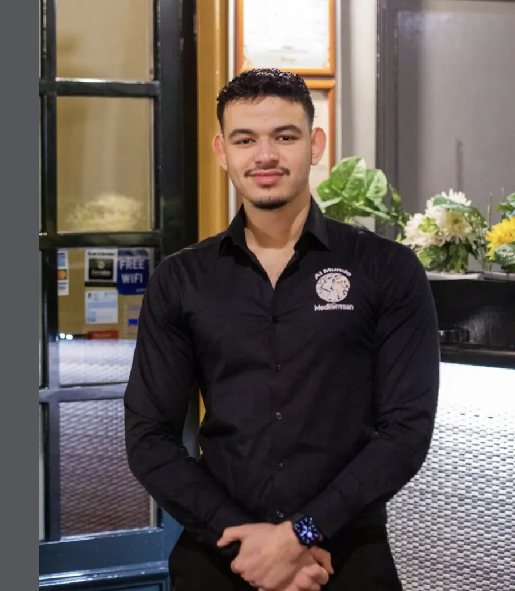
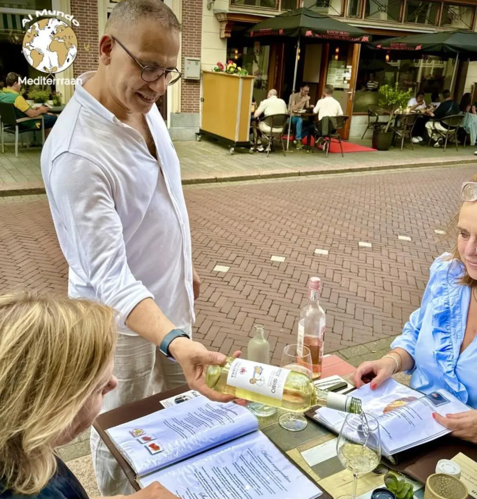
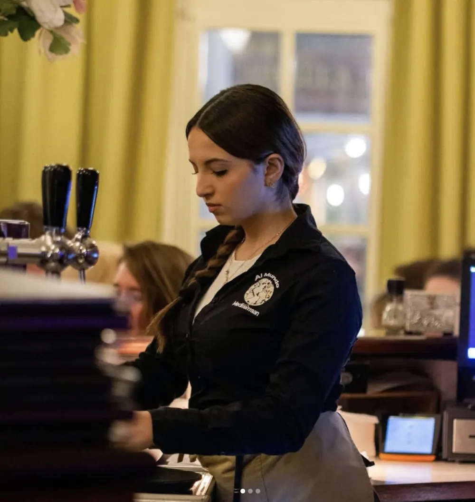
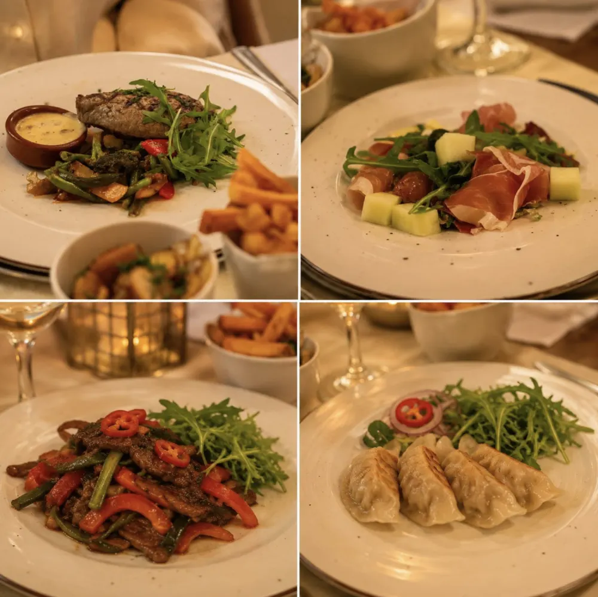
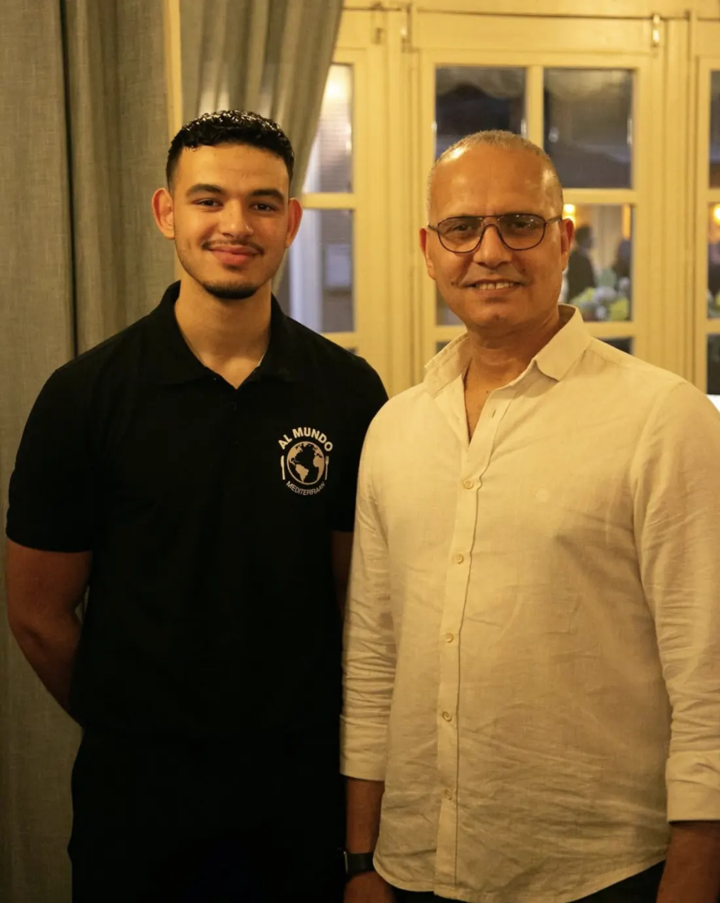

A place where the owner still holds the door open for you. So welcoming, all of them.
Marie-José Smedeman
Al Mundo means "to the world". That's exactly what happens every evening on the Orthenstraat.

Host Osman welcomes you as if you're eating at his own home, and son Kamil stands beside him in service. Guests mention them both by name in their reviews.


A place where the owner still holds the door open for you. So welcoming, all of them.
A very friendly owner. We ate exceptionally well!
Kamil in particular is a great host. A good, not too large menu, and still plenty of choice.
Upstairs you eat facing the street, with doors opening onto the terrace when the weather allows. Downstairs you sit beneath the vaulted cellar, among candlelight and wicker platters.



